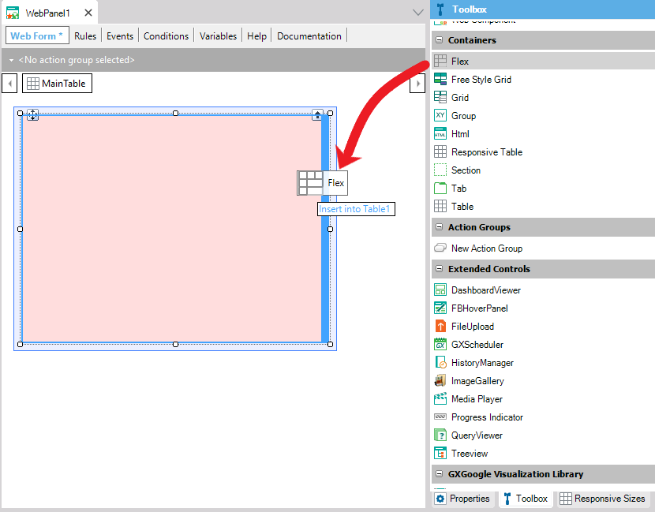
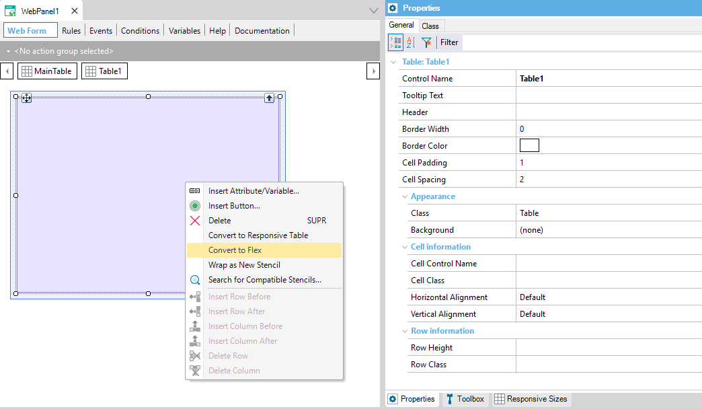

Flex control
The Flex control is of container type. Its objective is to offer new ways to arrange controls in the user interface, even if the sizes of the controls contained are unknown. For this reason, it provides more efficient ways to achieve receptive user interfaces than the Table and Responsive Table controls. To add a Flex control to the selected location, drag the Flex control from the toolbox:  Also, a Table or Responsive Table control can be converted by right-clicking on them and selecting the "Convert to Flex" option from the context menu (this option is also available in the main table of the form).  Unlike the Table and Responsive Table controls, the Flex Control container has a group of properties called "Layout Behavior," where the following properties can be configured:
The Flex control has the Class property: Flex configured by default. This class can be customized from the theme. In addition, from the theme class the following properties can be configured: Flex Direction property, Flex Wrap property, Justify Content property, Align Items property, Align Content property. AvailabilityThe control is available from GeneXus 15 upgrade 12 ScopePlatforms: SmartDevices (Android, iOS), Web(.Net, Java) See AlsoA GeneXus Flex and Flex Grid sample
|

| Backlinks | |
| AlignItems property | Flex control |
| Toc:Flex Layout Container | Smart Table control |